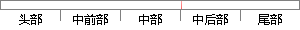

为了方便处理，假设所有话者概率密度函数具有相同的形式，但函数中参数值设定不同，此时说话人模型可以看成为符合给定概率密度分布形式的一组参数值。
片段位置图

相似结果|
相似片段 1：为了方便处理，假设所有话者概率密度函数具有相同的形式，但函数中参数值设定不同，此时说话人模型可以看成为符合给定概率密度分布形式地一组参数值。近年来调查发现，说话人的特征分布并没有严格遵循某一个特定
|
※ 片段修改建议 ※
近似词参考：- 方便：便利 利便 轻易
- 处理：处置 处置惩罚
- 假设：假定 假如
- 所有：全部
- 具有：具备 拥有
- 相同：不异 沟通 雷同
- 形式：情势
- 不同：分歧 差别
- 说话：措辞 语言
- 模型：模子
- 看成：当作 算作
- 符合：合适 契合 吻合 相符 切合
- 分布：散布 漫衍
- 形式：情势
系统自动生成语句：为了便利处置，假定全部话者概率密度函数具备不异的情势，但函数中参数值设定分歧，此时措辞人模子可以当作为合适给定概率密度散布情势的一组参数值。
注：本片段修改建议为系统自动生成，仅供参考。